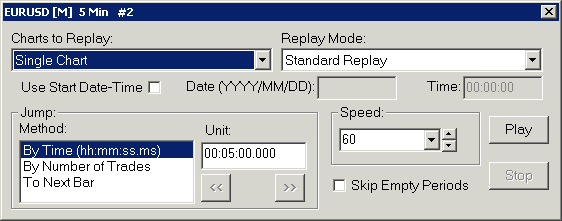
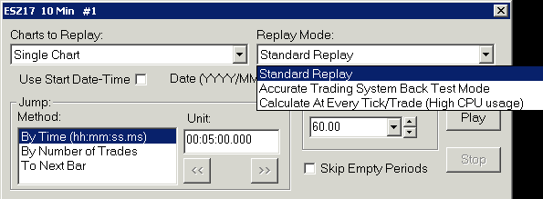

Replaying Charts
- Introduction
- Basic Chart Replay Instructions
- Replaying Chart from Specific Date-Time
- Chart Replay Window Not Visible
- Replay Control Panel Controls
- Clear Trade Data Options
- Starting Replay with Existing Data in Chart
- Bid and Ask Prices During Replay
- Replaying Trade DOM Windows
- Replaying of Market Depth Data
- Daily Session Values During Replay
- Automatic Skipping of Periods Where There Is No Trading and Synchronization
- Replay and Trading
- Trade Position Quantity During Replay and Jumping Back
- Historical Intraday Data Record Timeframe Effect on Replays
- Chart Update Interval During Replays
- Replaying Historical Daily and Higher Timeframe Charts
- Stepping through Chart Bars One by One
- Replay Not Starting at Specified Bar or Date-Time
- Replaying Non-Simulated / Live Order Fills
- Improving Replay Performance / Eliminating Freezing
Introduction
Sierra Chart is well known for its advanced chart replay functionality. When chart replay is used with Trade Simulation Mode, you have a very powerful trade simulation platform.
The Chart Replay feature is used to replay Intraday charts. Multiple charts can be replayed at the same time. To access the Chart replay feature, select Chart >> Replay Chart >> Replay Chart on the menu to open the floating control panel.
This control panel can be always visible and moved anywhere you like. It contains controls for controlling the replay, allows you to set the jump time, replay speed, and an option to replay all the charts in your Chartbook. Your replay speed can be slower than normal speed or much faster.
Market Depth data, if available, can also be recorded and replayed.
The Time and Sales window for the chart will display the individual trades during a chart replay, assuming the data in the chart data file is stored tick by tick.
Only Intraday data in the Sierra Chart scid (Sierra Chart Intraday data) file format can be replayed. By default this is the file format that Sierra Chart uses when Intraday data is stored from the integrated Data/Trading services.
If you have opened an Intraday chart from Intraday data that is in a text format, you first need to Import it before you can replay it. You should easily be able to import the data, as various text data line formats are supported.
Basic Chart Replay Instructions
- Open a new chart or go to an existing open chart. For instructions, refer to Open Charts. A replay can only be started from a standard chart. A replay cannot be started from a Trading DOM window which has no scrollbar, and no visible bars loaded.
- Select Chart >> Replay Chart >> Replay Chart (Control Panel) on the menu. Or press the Rpl Control Bar button.
If the Chart Replay window does not appear, then refer to Chart Replay Window Not Visible.
In the case of a detached chart, you must select Chart >> Replay Chart >> Replay Chart (Control Panel) on the detached chart menu so that the Replay Chart window is opened with the detached chart as the owner. Or if the detached chart has a Control Bar, press the Rpl button on the Control Bar. - Important: On the Chart Replay window be sure to uncheck Use Start Date-Time unless you want to specify the starting Date and Time directly on the Chart Replay control panel.
If you are using Use Start Date-Time, then skip the next step. However, in this case it is essential that you ensure that the first Date-Time you want to replay is actually in the chart. Go to the beginning of the chart with Chart >> Goto Beginning of Chart and look at the first Date-Time in the chart. You can tell by looking at the timescale at the bottom. To load more data in the chart, refer to Downloading/Viewing More Historical Intraday Data.
If you are starting a replay at a Date-Time which is not in the chart, then there is going to be unexpected behavior with the replay. - Scroll the chart back to where you want to begin the replay. Use the scroll bar at the bottom of the chart to scroll the chart back. You can also press the Home key on the keyboard to go to the beginning of the chart. Refer to the image below.
If you cannot scroll back to the point in time where you wish to begin the replay, then select Chart >> Chart Settings and increase the Days to Load. Press OK to close the Chart Settings window. Also, increase the chart bar spacing by pressing the Up Arrow key on your keyboard.
If you wish to replay data from an earlier date than what is shown in the Date Range in File box, then refer to Downloading/Viewing More Historical Intraday Data to access more historical Intraday data. - Set the Speed to what you want to use. If this is your first time with a replay, try running at about 30 or 60 times in order for it to be more obvious a replay is occurring.
- Set the Charts to Replay setting to the particular charts you want to replay. If you are just getting started with chart replay, we recommend using just Single Chart.
- Press the Play button to start the replay.
- You will receive a prompt named Clear Trade Data . Choose the appropriate option.
- In this image, you can see the indicators which indicate that a chart is replaying:
- If you do not see the chart advancing to the next bar when you expect it should, there can be two possibilities. The first step is to increase the replay Speed because it is not fast enough. Try increasing the Speed to 120. If that speed does not cause new chart bars to appear, increase the Speed to 1440 for the purpose of confirming the replay functionality is working, and to advance to a point in time where there is data.
- In the rare case, there is missing data in the chart or out of order data which is impacting the replay, re-download all the data in the chart by going to the chart and selecting Edit >> Delete All Data and Download. You just need to do this once on any chart for the symbol being replayed.
- The next step is to enable Skip Empty Periods on the Chart Replay window. For more information about this setting, refer to Automatic Skipping of Periods Where There Is No Trading and Synchronization.
Even with this option enabled, you may still have to wait up to about 65 seconds for the next bar to appear based upon the replay Speed you are using, the Intraday Data Storage Time Unit setting, and whether or not trading has occurred at the point in time in the chart you are replaying. For some additional information about this, refer to Historical Intraday Data Record Timeframe Effect on Replays.
{kind=link}
{kind=link}
{kind=link}
Replaying Chart from Specific Date-Time
To replay from a specific Date-Time in the chart, follow the instructions below.
- Open a new chart or go to an existing open chart. For instructions, refer to Open Charts. A replay can only be started from a standard chart. A replay cannot be started from a Trading DOM window which has no scrollbar, and no visible bars loaded.
- Select Chart >> Replay Chart >> Replay Chart (Control Panel) on the menu. Or press the Rpl Control Bar button.
- On the Replay control panel, enable the Use Start Date-Time option.
- In the Date and Time boxes, enter the starting Date and Time for the replay in the time zone of the chart.
You need to enter a Date-Time, which is not earlier than the first Date-Time in the chart. Select Chart >> Goto Beginning of Chart and look at the first Date-Time in the chart. You can tell by looking at the timescale at the bottom. To load more data in the chart, refer to Downloading/Viewing More Historical Intraday Data. - Set the Speed to what you want to use. If this is your first time with a replay, try running at about 30 or 60 times in order for it to be more obvious a replay is occurring.
- Set the Charts to Replay setting to the particular charts you want to replay. If you are just getting started with chart replay, we recommend using just Single Chart.
- Press the Play button to start the replay.
- For further details, refer to Basic Chart Replay Instructions.
Chart Replay Window Not Visible
If the Replay Control Panel window does not appear at all when you select Chart >> Replay Chart >> Replay Chart, then select Chart >> Replay Chart >> Reset Replay Control Panel Window to reset it back to its default position.
After selecting this command, select Chart >> Replay Chart >> Replay Chart to display it again.
If you are not able to display the replay control panel by using the configured keyboard shortcut, then the check the Keyboard Shortcuts to see if it is assigned to something else in Sierra Chart.
Additionally a keyboard shortcut may not work because at the Operating System level the keyboard shortcut may be getting captured and not picked up by Sierra Chart.
Replay Control Panel Controls
{kind=link}
All replay functionality is accessed through the Replay Control Panel window. Each of the controls on this window are documented in this section.
The Replay Control Panel window can be opened by selecting Chart >> Replay Chart >> Replay Chart on the menu, by pressing the Ctrl-R keyboard shortcut or by pressing the Rpl Control Bar button.
The ability to Play/Pause and Stop the Replay is also available from the Chart >> Replay Chart menu. If the Chart Replay Window is closed when when of these options is selected, then the Chart Replay Window will be displayed.
Partially Visible Replay Control Panel: If the Replay Control Panel window does not appear at all or some of its controls are partially cut off, then refer to Chart Replay Window Not Visible.
Play
This button begins or resumes a replay on the active chart. When starting a replay, the first step is to scroll your chart back so that the bar you want to begin the replay at, is the last bar in view on the chart. Press the Play button to begin the replay. When the Charts to Replay option is set to All Charts in Chartbook, then this plays all Intraday charts in the active Chartbook.
Reloading of Chart
When starting a replay or jumping back in time, keep in mind that the chart needs to be reloaded, which can be time-consuming, and therefore it is important that you set the Days to Load to the minimum number of days possible in Chart >> Chart Settings.
If you need to replay data that is far back in time and want to load a minimum number of days, then set the Use Date Range >> From and Use Date Range >> To in Chart >> Chart Settings to the date range that you want to replay. The date format is: YYYY-MM-DD.
New Bars Do Not Appear During a Replay
When you start a replay and new bars do not appear, then this can be for two possible reasons:
1. You are running a replay at too slow of a speed, Speed = 1.0 (equivalent to real-time), and the underlying data in the data file has a high timeframe per record such as 1 Minute. Therefore, you would only see a new bar appear every minute assuming there is some trading activity every minute. Increase the replay Speed in this case.
2. There is infrequent trading activity at the time you are performing a replay. When you perform a replay at a time in the chart where there has been minimal trading going on, then bars will be appearing infrequently. This is especially true if you are replaying at a slow replay Speed.
Pause
After beginning a replay, the Play button becomes the Pause button. This button pauses a replay on the active chart.
When All Charts in Chartbook is selected, this pauses a replay for all charts in the Chartbook that are being replayed.
Stop
When a replay is running or is paused, the Stop button becomes enabled.
Press the Stop button to stop the chart replay. When stopping a replay, the chart data is reloaded in the chart up until the most recent time in the Intraday data file.
When a Chartbook is closed, the replay is also stopped on all charts within that Chartbook.
Jump
This section of the Replay Window is used to jump forward or backward in time. There are different methods available for the amount to jump by along with the quantity associated with the movement.
Method
This section defines the specific method that is used to move forward or backward in time. The following options are available:
- By Time (hh:mm:ss.ms): The amount to jump forward or backward is defined by an amount of time in hours (hh), minutes (mm), seconds (ss), and milliseconds (ms) from the current position.
- By Number of Trades: The amount to jump forward is defined by a number of trades that has occurred from the current position.
- To Next Bar: The amount to jump forward is defined as the next bar from the current position. This effectively ends the replay of the current bar, displays the full bar information for the current bar and then begins the replay at the next time period in the chart.
Unit
This value defines the amount that will be skipped in the replay when selecting the << (Jump Back) or >> (Jump Forward) button.
The entry of the unit changes depending on the setting of the Method. When Method is set to By Time then the Unit values are entered in the form hh:mm:ss.ms where h=hours, m=minutes, s=seconds, and ms=milliseconds. When Method is set to By Number of Trades then the Unit values are entered as integers for the number of trades.
It is important to understand that you cannot specify hours as 24 or Minutes as 60 or Seconds as 60. 24 hours would need to be specified as 23:59:59.999. 60 minutes would be specified as 1:00:00.000. 1 minute would be specified as 00:01:00.000.
<< (Jump Back)
This is the jump back button. It jumps the replay back by the amount specified in the Unit edit box on the Replay Control Panel. When you use this jump button, the chart is reloaded to the last time displayed in the replay of the chart minus the jump amount.
It is only supported jump back by time or to the prior bar, and not by the Number of Trades.
If the location to jump to does not exist in the data file then no jump will occur or the jump may not go to the exact time desired. If you want to be able to jump to any time, then enable Chart >> Chart Settings >> Include Columns with no Data.
To reduce the amount of time to reload the chart when jumping, select Chart >> Chart Settings. Reduce the Days to Load setting to a smaller number.
>> (Jump Forward)
This is the jump forward button. It jumps the replay forward by the amount specified in the Unit edit box on the Replay Control Panel. When you use this jump button, the chart is loaded to the last time displayed in the replay of the chart plus the jump amount.
If the location to jump to does not exist in the data file, then no jump will occur or the jump may not go to the exact time desired. If you want to be able to jump to any time, then enable Chart >> Chart Settings >> Bar Period >> Include Columns with no Data.
If you have paused one or more charts being replayed, and then you use the >> (Jump Forward) button to step through them, the charts will momentarily play to do the jump. They will go back into a paused state after the jump is completed. Do not try to pause them during this condition because this can inadvertently affect the state of other charts if you are replaying multiple charts.
Speed
This control displays and sets the Replay Speed. A value of 1 means the chart will be replayed at normal speed. Normal speed is equivalent to the speed at which a chart will update when it is updating in real time. A value of .5 means the chart will be replayed at half speed. A value of 2 means the chart will be replayed at twice the normal speed. Use any replay speed up to 100000. Do not enter a comma with the speed number.
The speed can be changed at any time. If a replay is running and the speed is changed, the replay will update to the new speed automatically.
Charts to Replay
{kind=link}
Single Chart
This option replays the single active chart.
All Charts in Chartbook
If you want to replay multiple charts or Trade DOM charts at the same time, select the All Charts in Chartbook option.
This will cause Play, Pause, <<, >> and Stop to affect all the Intraday charts and Trade DOMs (which are also chart objects) in the same Chartbook where the chart you are controlling the replay from is located.
When you are replaying multiple charts by using Charts to Replay >> All Charts in Chartbook, they will remain synchronized. However, synchronization potentially can be lost and is explained in the Automatic Skipping of Periods Where There Is No Trading and Synchronization section.
Days to Load Setting: When replaying multiple Intraday charts with the Charts to Replay >> All Charts in Chartbook option, you will need to make sure the Use Number of Days to Load >> Days to Load setting in Chart >> Chart Settings for any other charts being replayed, is set to the same or greater value than the chart you are controlling the replay from.
For example, if in the current chart you are controlling the replay from, you have Days to Load set to 20 days and you are starting a replay from the beginning of the chart, then you need to make certain the other charts and Trade DOM windows in the same Chartbook also have Days to Load set to 20 or higher. This is especially true for the Trade DOM charts (File >> Open Trading DOM), in case you want to do simulated trading with a Trade DOM.
By default Trade DOMs only load 1 day. Additionally, the Session Times in Chart Settings should be identical for all the charts or they should be set to 00:00:00 to 23:59:59. Otherwise, the replay may not run in the other charts at certain times and you may also have synchronization issues.
Charts from other Chartbooks which have been made visible through Window >> Window Always Window will not be replayed.
Charts with Same Link Number
This option will replay charts with the same chart Link Number which are in the same Chartbook.
When starting a replay using this option you must have one of the charts active that has the same Link Number of the charts that you want to replay. Otherwise, just the active chart will replay.
If the expected charts do not replay, then make sure they have the same Link Number, and they are all in the same Chartbook. When determining if the charts are in the same Chartbook, keep in mind they could be from another Chartbook if the Window >> Window Always Visible command is enabled.
This option is ignored if the chart you are starting the replay from has its Link Number set to None or 0.
Replay Mode
{kind=link}
There are three possible settings for the Replay Mode. They are described below.
The Replay Mode can only be set when a replay is started from a completely stopped state. Any changes to this setting after the replay is started, do not go into effect.
Standard Replay
Use Standard Replay when not performing back testing of an automated trading system and only performing an ordinary chart replay. This will provide the fastest and most efficient replay. There is no reason to use Accurate Trading System Back Test Mode. It is less efficient and only designed for automated trade system back testing.
The Time and Sales window for the chart that is being replayed is supported during a replay and will display trades as they occur. The Time and Sales window will accurately display the true historical trades if the Intraday data file contains tick by tick data. Otherwise, there will be one trade each displayed for each of the Open, High, Low, Close values of the underlying data records in the Intraday data file.
Calculate Same as Real Time
This mode performs a calculation for the studies after the amount of time that elapses during the replay is equal to the Chart Update Interval.
Accurate Trading System Back Test Mode
If you are performing a replay based back test of an automated trading system when using the Spreadsheet System for Trading study or an Advanced Custom Study that uses the ACSIL Trading functions, then you need to set the Replay Mode to Accurate Trading System Back Test Mode.
When you use Accurate Trading System Back Test Mode, the study functions on the chart are going to be called/calculated whenever the High, Low, or Last prices of the latest bar currently loaded into the chart change or there is a new bar added to the chart during the processing of the underlying data records in the Intraday chart data file. This provides a combination of accuracy and efficiency. It will give a consistent result every time you perform a back test of your trading system.
If there is a change with the Bid or Ask prices, which are stored with 1 Tick Intraday data, but the High, Low, Last trade prices of the last bar in the chart do not change or there are no new bars added to the chart, the studies on the chart will not be calculated.
Although, any working Simulated orders can still be filled from these Bid and Ask prices as they are processed from the Intraday data file. An ACSIL study can be aware of all of the Bid and Ask price changes by using the sc.GetTimeAndSalesData function the next time the study function is called.
When you have enabled Charts to Replay >> All Charts in Chartbook | Charts with Same Link Number and you are using Accurate Trading System Back Test Mode, then in this case there is a multiple chart synchronized replay being performed.
When there is a multiple chart synchronized replay, the studies are called/calculated whenever the High, Low, or Last prices of the current bar changes or there is a new bar added to the chart during the processing of the data records in the Intraday chart data file. This ensures consistency with multiple chart back tests no matter what the replay speed is.
It needs to be noted, that back testing does not give results which will be exactly what you receive in real-time. This is not possible for various reasons. The actual bid and ask prices are not known and it is not known where in the order queue your order exists. There can be other factors as well.
When using Accurate Trading System Back Test Mode, Filled and Canceled orders will be removed from the Trade Orders list, so it does not become full of too many orders and slow down processing.
When using Accurate Trading System Back Test Mode, momentary freezing of the Sierra Chart user interface is not unusual because there is a large amount of processing done before the thread processing that data yields back to the user interface of Sierra Chart.
When there is a multiple chart synchronized replay, the amount of time of data which is processed in each chart at a time, is prompted for when the replay is started during a multiple chart synchronized replay with the Enter Processing Step in Seconds prompt. This also applies when using the Calculate at Every Tick/Trade Replay Mode. Therefore, if you use a processing step of 5 seconds, then 5 seconds of trades will be processed at once before the next chart is processed.
Calculate at Every Tick/Trade
When using Calculate at Every Tick/Trade, this is identical to the Accurate Trading System Back Test Mode Replay Mode, except that the study functions on the chart are going to be called/calculated for each data record in the Intraday data file. Therefore, when using tick by tick intraday data this is a very high accuracy, but inefficient, Back Test.
In the case where an Intraday data record has a timeframe of greater than 1 Tick/Trade, and you need to be aware of when this is the case, then there will be price and volume data consisting of more than one Tick added to the chart bars before the study function is called.
All of the other information in the Accurate Trading System Back Test Mode section applies to this Replay Mode as well.
When multiple charts are being replayed when using Calculate at Every Tick/Trade and you are prompted for the Processing Step In Seconds even though there is a calculation at every tick, there still are multiple ticks processed per chart for the specified time increment in seconds before going onto the next chart to be calculated.
Use Start Date-Time
The Use Start Date-Time checkbox allows the entry of a specific Date and Time to be entered as the beginning point of the Replay. When this checkbox is enabled, the following items become available:
- Date (YYYY/MM/DD): Enter the date for the start of the replay. The date is entered in the form YYYY/MM/DD where YYYY is the four digit Year, MM is the two digit month Month, and DD is two digit day. For example - 2017/09/23.
- Time: Enter the time for the start of the replay. The time is entered in the form hh:mm:ss where hh is hours in the 24 hour format, mm is minutes, and ss is seconds. For example - 14:27:00.
Skip Empty Periods
When this option is enabled, the replay will automatically skip over any period in time in which there is a gap of 65 seconds or more. For more information, refer to the Automatic Skipping of Periods Where There is No Trading and Synchronization section.
Clear Trade Data Options
When starting a chart replay from a stopped state, not a paused state, you will receive a list of options for clearing trade data for the Symbol and Trade Account of the chart.
This data includes Trade Activity Data, open and finished orders, and the Trade Position data.
The purpose of clearing this data, is so that if a replay is being done for the purpose of trading, the data related to prior trades is removed so that the new trades do not get mixed in with the old trades.
If you want to maintain the existing trades from a prior back test, then before starting the replay, change the Trade Account on the Trade Window to a different account for the next replay to avoid conflicting trading data.
The descriptions of each of the different options for clearing trading related data, are given below.
- Do Not Clear Trade Data for Symbol and Account: When choosing this option, there is no clearing of the trading data for the symbol and Trade account of the chart. Any new trade submitted during the replay, will be added in with any existing trading data for the Symbol and Trade Account of the chart.
- Clear All Trade Data for Symbol and Account: When choosing this option, all prior trading data for the Symbol and Trade Account is cleared.
- Clear Trade Data from Start Date-Time for Symbol and Account: When choosing this option, trading data for the Symbol and Trade Account is cleared from the starting Date-Time of the replay. When this type of operation is performed, it is performed asynchronously and takes some time for it to complete. Normally this is going to be less than one second. It should be very fast. So therefore, before actually trading in the chart, it is necessary for this operation to complete. So the chart is placed into a Paused state when you start a replay.
To resume the replay simply press the Play button on the Replay window. If you do not want to have the replay paused, then do not use this option.
Starting Replay with Existing Data in Chart
Follow the instructions below to start a replay with existing data in the chart. These instructions assume that you are using the Replaying Chart from Specific Date-Time.
- Select Chart >> Chart Settings >> Data Limiting.
- Set the Days to Load for Intraday Chart Data Type to the number of days which will sufficiently go back further in time before the Date-Time you are starting the replay at.
- Start the replay according to the Replaying Chart from Specific Date-Time instructions.
Bid and Ask Prices During Replay
During a chart replay, the Bid and Ask prices displayed and ced or actual.d in the chart, can either be estimated or actual. For more information about this, refer to Trade Simulation Accuracy and Bid/Ask Prices During Replays.
To always use simulated Bid and Ask prices, enable the Always Simulate Bid and Ask Prices During Replay (Chart >> Chart Settings >> Trading) Chart Setting.
Whether the actual or simulated Bid and Ask prices are used, the Bid Size and Ask Size values will always be 1 within the chart during a replay. However, if market depth data is being replayed, then the qnantities for each of the market depth levels in the market depth data, will contain the actual quantities and not just 1. However, this still will not affect the best Bid and Ask sizes that are displayed in the Window >> Current Quote Window.
Replaying Trade DOM Windows
To replay data through a Trade DOM, follow these instructions:
- Open a Trade DOM through File >> Find Symbol if you do not have one open already.
- On the Trade DOM window, select Chart >> Chart Settings.
- Select the Data Limiting tab.
- Set the Load Data Limiting Method: Days to Load >> Days to Load for Intraday Chart Data Type, to the number of days back from today that the replay will be started at. This is essential. It is best to set this too high rather than too low. However, not too high.
- Select the Session Times tab.
- The Time Zone setting must match the Time Zone setting in the chart the replay will be started from. This is essential.
- If the chart you will be starting the replay from has the Continuous Futures Contract option enabled and it has an identical Symbol to the Trade DOM, then it is necessary to set the Symbol >> Continuous Contract setting on the Trade DOM to be the same as the chart you will be starting the replay from.
- Press OK to close the Chart Settings window for the Trade DOM.
- It is most reliable to start the replay from a standard chart and control the Trade DOM replay from there. Therefore, open or go to the chart you will be starting the replay from. This needs to be a standard chart.
- Select Chart >> Replay Chart >> Replay Chart to open the Chart Replay window.
- On the Chart Replay window, select the Charts to Replay >> All Charts in Chartbook option.
- Start a replay from that specific chart following the Basic Instructions.
- You need to disable Skip Empty Periods on the Chart Replay window to prevent any loss of synchronization between the Trading DOM and the associated chart.
- For additional information, refer to the Charts to Replay >> All Charts in Chartbook section.
- If you want to also replay market depth data, then follow the Downloading of Historical Market Depth Data instructions.
Wait for the historical market depth data to complete, before starting the chart replay. You can check the progress in Window >> Message Log. Example:
HD Request # 73 | Market depth data download complete for MESM23_FUT_CME. Unique request ID: 73 | (Date-Time)
Replaying of Market Depth Data
Follow the instructions below to be able to replay market depth data or include market depth data during chart replay.
- The first step is for there to be historical market depth data available for the time period being replayed.
- You will have historical market depth data when using the Market Depth Historical Graph study.
- You can also download historical market depth data by following the Downloading of Historical Market Depth Data instructions.
The downloading of historical market depth data is only supported with certain exchanges (CME, CBOT, NYMEX, COMEX, EUREX, CFE, NYSE, NASDAQ, AMEX) and only when using the Denali Exchange Data Feed or the Delayed Exchange Data Feed. It is not supported with other data feeds. - To replay a chart follow the Basic Chart Replay Instructions.
- Select File >> Open Market Depth Window to see the recorded market depth data. Only Date-Times in the chart where market depth data is available will show market depth data.
- Other features within a chart which depend upon market depth data, will display the stored market depth data.
- If you do not see any market depth data during the replay or you only see it at certain times, then verify that there is market depth data available for the particular Date-Time range being replayed.
To do this, add the Market Depth Historical Graph study to the chart. This will let you visually see the market depth data at each chart bar. - Also refer to Market Depth Historical Graph Not Displaying.
Update Frequency of Replayed Market Depth Data
A full snapshot of market depth is recorded once every 10 minutes. At the time you start a replay which includes market depth data, you will not necessarily see all of the market depth levels at that moment. It can take a few seconds or a minute or so to for them to fill in. Although the levels which are displayed are 100% accurate.
Daily Session Values During Replay
During a chart replay, the daily session values displayed in Window >> Current Quote Window will be based upon the price movement of the symbol in the chart being replayed, from the start of the replay, to the current replay time.
Therefore, the Daily High, Daily Low, Daily Volume and other values will be based upon prices and volume encountered from the start of the replay to the current replay time.
Automatic Skipping of Periods Where There Is No Trading and Synchronization
During a chart replay of an Intraday chart, the replay simulates real-time updating and is also affected by the Replay Speed.
What this means is that when the Replay Speed is 1, then trading that occurred over a 1 minute period will take 1 minute to replay. When the Replay Speed is increased to 2, then it will take 30 seconds to replay 1 minute of trading.
It is important to be aware, that when periods of no trading are encountered in the Intraday chart, that the replay will pause until the replay time, which is affected by the replay speed, catches up to new data with a time equal to or less than the replay time.
When the Skip Empty Periods option is enabled, then when encountering a period of time in the chart where you will have to wait 65 seconds or more, that period is instantly skipped over and the replay continues. This is also true when replaying multiple charts when using Charts to Replay >> All Charts in Chartbook, unless Accurate Trading System Back Test Mode is selected on the Chart Replay window. In this last case, the data will not be instantly skipped over.
It is also important to be aware that when a chart is replayed at an accelerated speed, there is a greater probability of encountering a period of time where the chart pauses when there is no trading activity because the amount of time to wait will be less than 65 seconds because of the acceleration. You will notice that when reducing the Replay Speed at these points, then the period of time where there is no trading will then be instantly skipped over. So in this case it is recommended reduce the Replay Speed to 1 and enable Skip Empty Periods. The period of time of no trading will get skipped over instantly.
When data is encountered in the Intraday chart data file which is outside of the Session Times defined in Chart >> Chart Settings >> Session Times and the Skip Empty Periods option is enabled, then that data is instantly skipped over and the replay continues. This is also true when replaying multiple charts when using Charts to Replay >> All Charts in Chartbook, unless Accurate Trading System Back Test Mode is selected on the Chart Replay window. In this last case, the data will not be instantly skipped over.
When you have selected Charts to Replay >> All Charts in Chartbook and you have selected Accurate Trading System Back Test Mode for the Replay Mode, then in this case there is a multiple chart synchronized replay being performed. The Skip Empty Periods option does not apply in this case. In this case the charts are always kept synchronized regardless of the Skip Empty Periods setting. In this case to skip over a period of time where there is no trading, increase the Replay Speed.
Skip Empty Periods also does not apply when using Trade >> Auto Trade System Replay BackTest. In this last particular case, the replay is run at the maximum possible speed. The speed is dependent upon the computer hardware.
When there is a skipping of time in the chart during a replay, synchronization is lost between the charts when multiple charts are replaying.
Preventing Loss of Synchronization Between Different Charts During Replay
When replaying multiple charts or Trading DOMs, it is necessary to disable Skip Empty Periods on the Chart Replay window to prevent any loss of synchronization between the charts and Trading DOMs.
Select Chart >> Replay Chart >> Replay Chart to open the Chart Replay window.
Replay and Trading
The information in this section applies to version 2128 and higher.
When a chart replay is started, the existing order fills in the Trade >> Trade Activity Log for the Symbol and selected Trade Account of the chart are loaded into an internal Trades list in the chart.
These order fills which are loaded into the chart start according to the Understanding and Setting the Start Date-Time for a Trades List explanation, assuming they exist, and up to the Date-Time that the replay is being started at.
In the case of simulated order fills, all of the available fills up to the Date-Time that the replay is being started at, are loaded in the chart.
Subsequent order fills which exist are loaded in the chart, as the Date-Time which they are for is encountered during the replay.
During the initial load of order fills, if at that Date-Time, the order fills indicate there is a nonzero Trade Position Quantity, then it will appear on the chart and in Trade Window Position Quantity display.
For an understanding of the calculation method, refer to Open Quantity Field Calculation Method.
This will be the reason why a Trade Position Quantity may appear on a chart and the Trade Window when it did not previously exist when the chart was not replaying.
And this is another reason why when you go back in time during a replay and start the replay again, why the Trade Position Quantity can and will change.
Trade Position Quantity During Replay and Jumping Back
The information in this section applies to version 2128 and higher.
During a Chart Replay, the Position Quantity at the current time of the replay is based upon the order fills available in the Trade Activity Log for the Symbol in Trade Account of the chart, up to the current Date-Time of the replay.
For a detailed explanation of the Position Quantity calculation method, refer to Open Quantity Field Calculation.
When jumping back in time during a replay, the Position Quantity can change if there were order fills which occurred after the Date-Time you jumped back to. Those order fills will no longer be included in the Position Quantity calculation.
When those subsequent Date-Times are encountered in chart where the order fills occurred, they they will then be included in the chart and therefore also included in the Position Quantity. So as the replay progresses after jumping back, and if you are not doing any new trading, the Position Quantity will change.
However, most importantly When jumping back in time, you must never perform trading again during the the timeframe that you have jumped back over. If you do, this will result in an incorrect Open/Close state of the order fills, an incorrect Position Quantity of the order fills, and therefore cause various issues with the display of those order fills, issues with the Position Quantity calculation, and issues with order fill matching. Therefore, trading again over the timeframe that you have jumped back over, inherently is just not supported unless you clear the order fills first.
Historical Intraday Data Record Timeframe Effect on Replays
When replaying data, updating is not necessarily tick by tick. The replay will be in time units based on the timeframe of the data records in the Intraday chart data file. The timeframe of the data records depends on the timeframe of the historical data from the Data or Trading service you are using and the Intraday Data Storage Time Unit setting.
For example, if the Intraday Data Storage Time Unit is set to 1 Minute and the replay speed is 1 times, then you will not see any updating of the chart more often than in 1 minute intervals.
Select Global Settings >> Data/Trade Service Settings on the menu. Set the Intraday Data Storage Time Unit to a small setting for smoother replays. It should be at 2 Seconds or less. 1 Second is better than 1 Tick for efficiency.
The Intraday Data Storage Time Unit setting affects data collected in real-time and also affects historical data downloaded. For complete details, refer to Tick by Tick Data Configuration.
Depending upon the Data or Trading service you are using, there can be a mix of records with different time frames in the same data file. There can be 1 Minute data for some records and 1 Tick data for other records. So you may not always see consistency with the update interval during a replay.
After you make changes to the Intraday Data Storage Time Unit which affects the data records in the chart data files, you will need to re-download all of the data in the chart data file for the symbol you are replaying because these changes will not affect the existing data in the file.
To re-download the data, select Edit >> Delete All Data And Download. This only needs to be done once per symbol.
To visually observe a tick by tick replay, Accurate Trading System Back Test Mode must not be set. This setting is meant for back testing and the chart will not be redrawn frequently but instead infrequently. The actual frequency of drawing is dependent on various variables and cannot be stated here. You simply have to observe it to see what it will be in your particular case. Also, the user interface of Sierra Chart can momentarily freeze when running a back test when using Accurate Trading System Back Test Mode.
Chart Update Interval During Replays
During a replay, a chart is updated at the interval specified by the Global Settings >> General Settings >> Chart Update Interval setting when the replay speed is 1. As you increase the replay Speed, the Chart Update Interval is automatically decreased internally in the chart to accelerate the replay intervals to make the chart replay more smooth.
Replaying Historical Daily and Higher Timeframe Charts
It is not possible to replay Historical Daily, Weekly, Monthly and Yearly charts which are opened with File >> Find Symbol >> Open Historical Chart or File >> New/Open Historical Chart.
However, there are two solutions to this.
If you want to perform a Back Test of an automated trading system, then use the Bar Based Back Testing method. This works with historical Daily and higher timeframe charts.
Otherwise, you need to use an Intraday chart where the chart bars are set to a timeframe of 1 Day or greater. Follow the instructions below to do this.
- Open an Intraday chart by selecting File >> Find Symbol >> [select symbol] >> Open Intraday Chart.
- Select Chart >> Chart Settings on the menu.
- Set the Chart Data Type to Intraday Chart Only. This control is located just above the Intraday Chart Bar Period frame.
- Set the Intraday Chart Bar Period >> Bar Period Type to Days-Minutes-Seconds.
- Set the control under Days-Minutes-Seconds to 1-0-0. This will set the chart bars to 1 Day per bar. Use 7-0-0 for Weekly bars.
- Set the Start Time and the End Time controls in this window to what you require. For more information, refer to Session Times. Using the default Start Time of 00:00:00 and End Time of 23:59:59 is acceptable.
- Press OK to close the Chart Settings window.
- Continue with the Basic Instructions to replay this Intraday chart.
Stepping through Chart Bars One by One
It is supported to step through the chart bars one by one manually. To do so, follow these instructions:
- Open an Intraday chart.
- Start replay of an Intraday chart as explained in the Basic Instructions section.
- The Speed setting does not matter and can be anything.
- Select To Next Bar in the Jump Method selection box.
- Press the >> (Jump Forward) button to step through the bars one by one. Each time the Jump Forward button is pressed, the chart will advance by one bar and the next bar displayed will be complete.
In the case of Number of Trades, Volume, Range, Reversal, Renko, Delta Volume, Price Change, Point and Figure Bars, the very first trade of the next bar will be displayed and the last bar in the chart will consist only of a single trade.
Replay Not Starting at Specified Bar or Date-Time
When you start a chart replay, if you notice what appears to be a case where the starting Date-Time of the replay is not as intended, then one reason for this is that if there is a noticeable amount of time to load the chart when you start the replay, then as soon as the replay starts at the specified Date-Time or the bar you started the replay at, there is going to be a fast advancement, depending on the speed of the replay, from that bar due to the elapsed time of the chart loading.
For example, if the replay speed is 60 and it takes 10 seconds to load the chart, then the replay elapsed time will be 60×10 which is 600 seconds. This is equivalent to 10 minutes. So although the chart will actually indeed start at the specified Date-Time, you will notice that it seems to start at a time which is 10 minutes later.
Replaying Non-Simulated / Live Order Fills
It is supported to replay live trading activity so long as Sierra Chart has the order fills for that trading activity. You can view the order fills in the Trade Activity Log.
- Select File >> Connect to Data Feed in order to get the list of trading accounts from your Trading service if they have not been received during the current Sierra Chart session. However, the most recently used Trade Account will be remembered from the last session. So this step may not be necessary.
- Select File >> Disconnect if you do not have a need to be connected.
- Enable Trade >> Trade Simulation Mode On.
- On the Trade Window for the chart you will be doing the replay from, select your live trading account identifier. Refer to Selecting Trade Account.
- Enable Trade >> Show Order Fills.
- Perform a Chart Replay.
- As the order fills are encountered according to the current Date-Time in the chart as the chart is replaying, they will be displayed and the current Position Quantity will update to reflect these fills.
- Only the order fills will display. Working orders and Attached Orders will not display. Only the resulting fills from those orders.
Improving Replay Performance / Eliminating Freezing
There are conditions after when starting a chart replay which can cause Sierra Chart to be less responsive or in a frozen state for momentary periods of time. Follow these instructions below to avoid this.
You will first need to stop the replay by pressing the Stop button if a replay is running.
The information in this section also helps reduce the time to start the replay.
- Run Sierra Chart in Safe Mode if there are custom studies which are using high CPU usage.
- Set the Replay Mode to Standard.
- Use a lower Replay Speed like 50 or less.
- Refer to help topic 30 for other conditions which can lead to high CPU usage.
- Set the Intraday Data Storage Time Unit to 1 Second or higher.
- If there is a specific date range you want to replay, then first set that date range to load through the Chart Settings. And then start the replay after. Refer to Load Data Limiting Method .
*Last modified Sunday, 07th May, 2023.